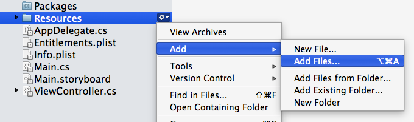
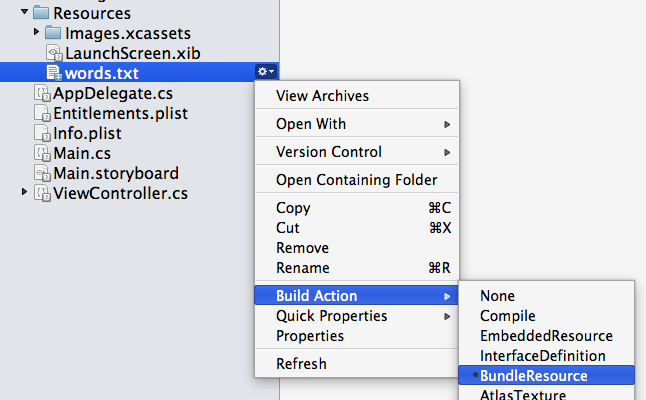

Duration
15 minutes
Goals
The primary goal of this lab will be to populate the Table Views you created in the first exercise with data. We will work with both of the screens to show both of the mainstream techniques for supplying data to a Table View.
Required assets
There are some additional source and data files contained in the Part 02 Resources folder as well as a completed version of the exercise if you'd like to compare your solution when you are finished. If you did not complete the first exercise, you can use the Completed project located in the Part 01 Resources folder.
Challenge
You will be continuing from the prior exercise. Here are the high-level steps for this exercise. Use these to work through the lab and refer to the step-by-step instructions that follow for any additional guidance you need.
- Add the data which will drive the application. There is an EmailServer.cs source file and a words.txt data file which need to be added to your project. Place the data file into the Resources folder.
-
The EmailServer.cs class is a simple data generator that "fakes" an email server. It has an
Emailproperty which provides anIList<EmailItem>that you will use to populate the Table View. EachEmailItemhas aSubjectproperty which we will use as the text. -
You will implement the data source in a
UITableViewSourceas well as in yourUITableViewControllerclass to try out both approaches. -
Implement the
RowsInSectionmethod to return the number of emails in the list. Code theGetCellmethod to create aUITableViewCell, populate theTextLabeland return the created cell.
Steps
Below are the step-by-step instructions to implement the exercise.
Add the data to the application
There are two files in the Part 02 Resources folder - EmailServer.cs and words.txt which need to be added to the project.
- Let's start with words.txt, this is just a data file with a variety of words in it used to generate email text. It needs to be placed into the Resources folder of our application. Right click on the Resources folder and select Add > Add Files. 
- Navigate to the Part 02 Resources folder and select words.txt. If you are using Xamarin Studio, select "Copy" when prompted; Visual Studio does the correct action by default.
- Make sure the added file has a Build Action of "Bundle Resource". In Visual Studio, check the Build Action for the file in the properties page. In Xamarin Studio, right-click the file (or click the gear next to it) and select Build Action from the menu. 
- Add the EmailServer.cs file to the root of the project. The build action will be "Compile" (and should be set by default).
Using the UITableViewController to populate a TableView
In this part, we will use the EmailServer and override methods in our UITableViewController to provide data for the Table View. We'll start here because it's the initial view controller, later we'll switch to our code-behind version.
- Open the TableViewController.cs source file - this is the file we created from the designer in the first exercise. This should be the initial view controller if you did all the instructions from that first exercise. If not, make sure to set it to be the starting screen.
-
Notice that the view controller derives from
UITableViewController- this will allow us to implement the data-source methods directly in this one class. -
Add a new
EmailServerfield to the class. Name itemailServer. Initialize it with a new server object. -
Next, let's implement the
RowsInSectionmethod - this is a virtual method of theUITableViewControllerclass. It should return the number of emails available (emailServer.Email.Count). -
Next, implement the
GetCellmethod - again, this is just a virtual override. You will need to perform the following steps:-
Create a new
UITableViewCellto represent the row visually. You can passCGRect.Emptyto the constructor as it will be sized automatically by the Table View. -
Find the proper
EmailItemin theEmailarray - use the passedNSIndexto get the correct row. -
Populate the
TextLabel.Textusing theSubjectfrom the email. - Return the created cell.
-
Create a new
- Run the application to see the results. If you don't see any data, make sure the proper screen is selected as the initial view controller.

Using UITableViewSource to populate a TableView
In this second part, we will use the same email list along with a custom UITableViewSource to provide data for our Table View in code behind.
- Open the original View Controller where you created the Table View in code. In the completed lab, this is named ViewController.cs but it might have a different name in your project.
-
We need to create a new class that derives from
UITableViewSource. You can place this class into its own file, or make it a nested class of the view controller where it is used - you will see this approach done quite often in sample code. Name the class "EmailServerDataSource". -
Inside your new class, instantiate a new
EmailServerand implement theRowsInSectionandGetCellmethod just as you did earlier. In fact, you can just copy/paste the implementation into this class, just make sure to add any missing namespaces such asFoundationandCoreGraphics. - Add a field to the View Controller to hold your data source.
-
In the
ViewDidLoadoverride, create the data source and assign it to theTableView.Sourceproperty, as well as your field. - Finally, before you run the app to test it, open the Main.storyboard and change the initial view controller back to the first screen (move the arrow from the currently selected screen to the other one).
-
Run the application and verify the results, you can change the
tableView.BackgroundColortoUIColor.Yellow(or some other color) just to make sure you are looking at the right screen - this color will be used to fill the empty spaces.
Summary
In this exercise, you have populated two UITableView instances with data using the two most popular methods - UITableViewController and UITableViewSource.